Project Overview
This project focuses on increasing the awareness, visibility, and community engagement of the Open Design Collaboratory (ODC), a Makerspace at the University of Toronto Mississauga, through an interactive, physical-digital installation.
Problem
Despite being a well-equipped makerspace that encourages creativity and collaboration, the ODC remains largely unknown to students. Most first-year students had never heard its name, found it difficult to locate, or assumed it was a space only for ‘design experts’.
For the ODC to function as a true community hub, students must first be aware of its existence. This project addresses this very lack of awareness and discoverability of the ODC, hindering its potential to function as a collaborative makerspace.
This problem formed our motivation to reframe the ODC as a discoverable, accessible, and welcoming space in order to grow a community of makers and designers.
To frame the problem from the user perspective, I created a comic strip showing the journey from uncertainty and low awareness to discovery and interest.
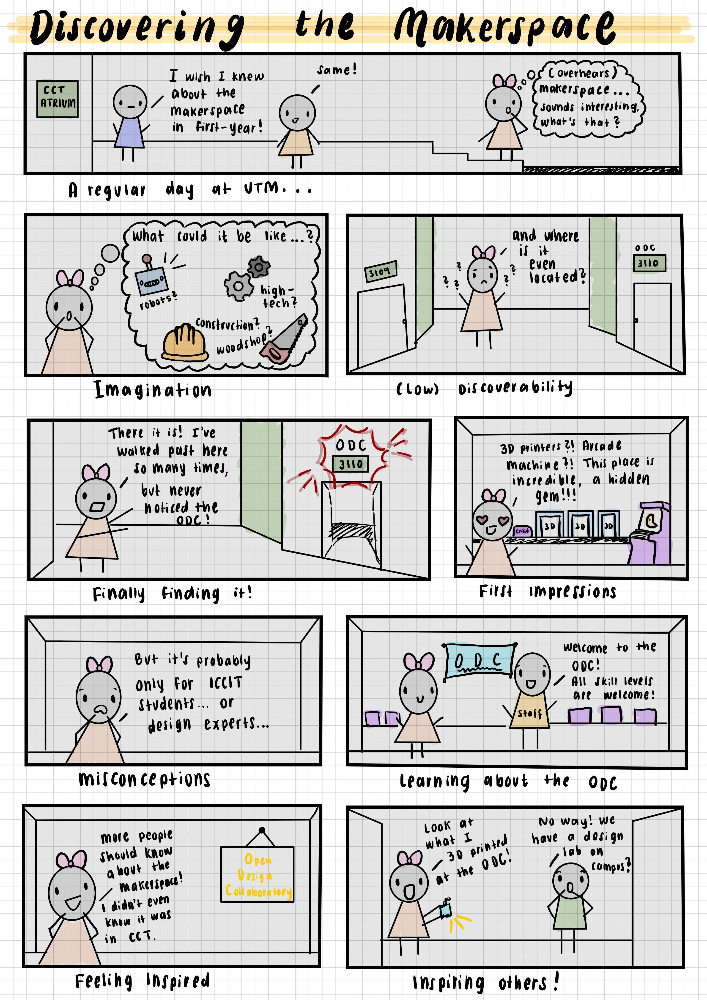
My Role
This was a collaborative team project for a second-year Design Thinking course. My contributions included:
- Brainstorming the problem space, ideation, and concept development
- Creating a UX artifact (comic strip) to visualize the user perspective
- Recruiting participants and conducting user research through diary study and interviews
- Building the initial prototype
- Facilitating the user testing session
- Helping build the final prototype
- Poster creation and presentation
Methodology
Empathize
We stepped into the shoes of first-year students to understand their awareness and perceptions of the makerspace.
Define
We identified discoverability and preconceived notions of the space as the core issue.
Ideate
We generated solutions that could increase visibility and invite students to learn more.
Prototype
We built a physical-digital vending machine installation designed to attract attention and raise awareness.
Test
We evaluated usability and engagement through user testing and refined the design from feedback.
User Research & Insights
Our user group included students enrolled in CCT109, the first-year introductory course for ICCIT programs, as well as students interested in design who could benefit from the makerspace. Through a series of interviews and mini-diary study conducted within the ODC, we found:
Zero Awareness
None of the participants had heard about the ODC before the study.
Wayfinding Issues
Students struggled to locate the makerspace, even when they were already in the same building.
Preconceived Notions
Many assumed the space was only for advanced users, upper-year students, or “design experts.”
High Interest After Exposure
Once informed about the space, students responded positively and expressed interest in using it.
User insights helped us converge on the right problem to solve: the ODC already had value, but students first needed to know it existed and feel welcome using it.
Ideation
We explored many solutions that would capture attention in high-traffic areas, communicate what the makerspace is, and encourage curiosity and engagement.
We iterated through ideas like a captivating visual artifact with a QR code leading to more information, an interactive machine, or introductory maker-kits to create a small item using the machines in the ODC.
Our overall idea was that the solution would be placed in a location outside the Makerspace, like in the library or a busy hallway, so it can captivate attention and students can learn more about it. Additionally, we understood that students love freebies and incorporating some kind of reward for interacting with the prototype would serve as an incentive to raise awareness of the ODC.
This led to the concept of the MakerDrop: A vending machine-style installation that dispenses small items (3D printed keychains and vinyl stickers) made using the machines in the makerspace, along with information about the makerspace. We explored multiple interaction models, including button-based and knob-based systems, as well as different ways of packaging information. We took inspiration from a gumball machine while settling on a rotating knob to dispense items.
Prototype
Our initial lo-fi prototype was created using cardboard, a plastic water bottle for the dispenser, and cardstock for the prize boxes.
It featured a labelled manual knob, small prize boxes, and a QR code linking to a digital gallery of student projects as well as information on the location and purpose of the makerspace.
The overall design was intended to be eye-catching and playful in order to spark curiosity and increase discoverability.
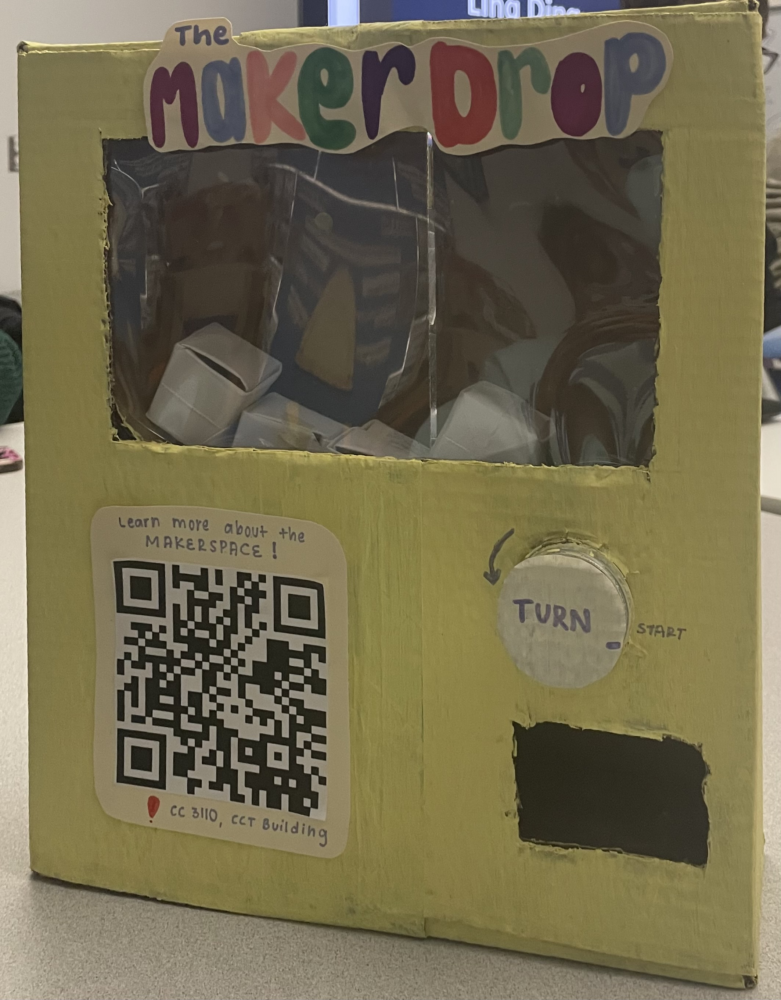
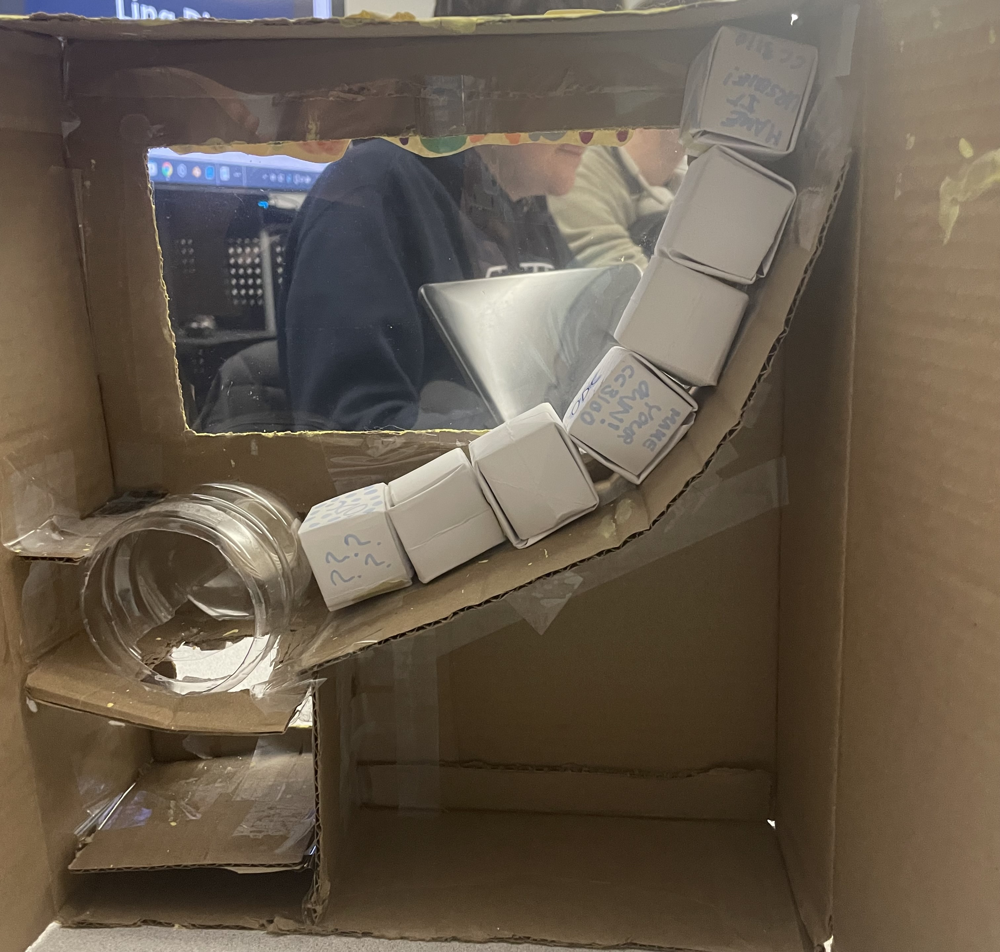
User Testing
Testing was conducted in the ODC, using the prototype. We used the think-aloud protocol and direct observation of users; users narrated their thoughts throughout the interaction like turning the knob, scanning the QR code, and our team took notes. We also asked follow-up questions about users’ experience during the interaction and impressions.
It was evident that the users, including students in our class and our professor, found the concept to be extremely engaging and novel. The ‘mystery box’ element created from cardstock (empty boxes for this prototype) increased excitement; the machine successfully fulfilled its goal of capturing attention.
Key issues identified:
- The knob often got stuck and required multiple turns
- Items did not always dispense on the first try
- Some confusion remained in the interaction flow
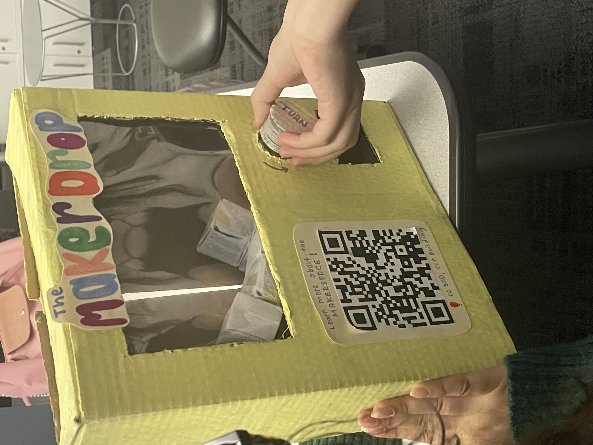
Iteration – Final Prototype
Based on the testing results, we refined the final prototype with a smoother dispensing mechanism, adjusting knob usability, and using stronger materials. We made changes to the inside of the machine, including the placement of the shelf where the items sit and how they slide down to the ramp connected to the knob. Furthermore, we changed the cardstock-box idea to little packets of paper, laminated with packing tape; this actually helped reduce the friction between the packet surface and shelf, allowing the prizes to slide better and be dispensed in the first try!
The project requirements included using three machines available in the makerspace for the final prototype, so we made the body of the machine with wood-panels from the laser-cutter; the knob using the 3D printer; and prize items like vinyl stickers made from Cricut machine and 3D printed keychains. This prototype also features a digital gallery website leading to more information about the ODC, accessed through the QR code.
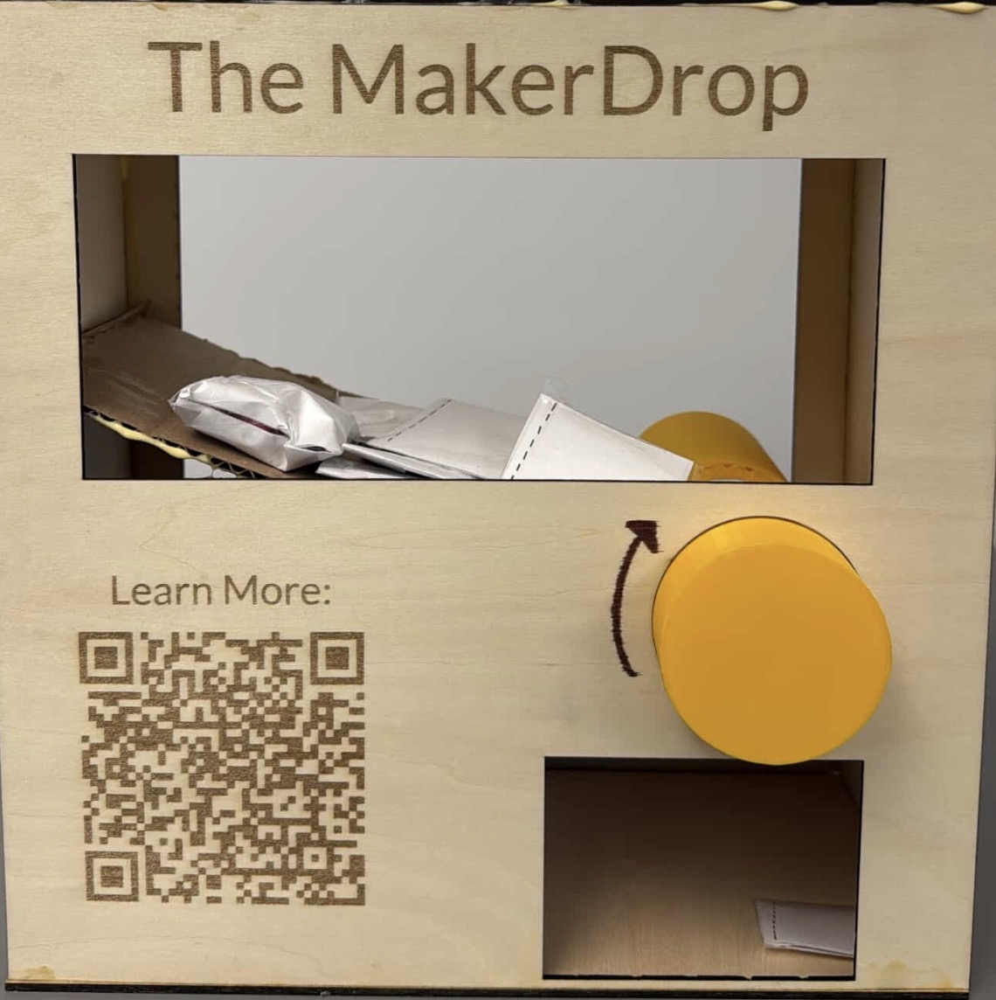
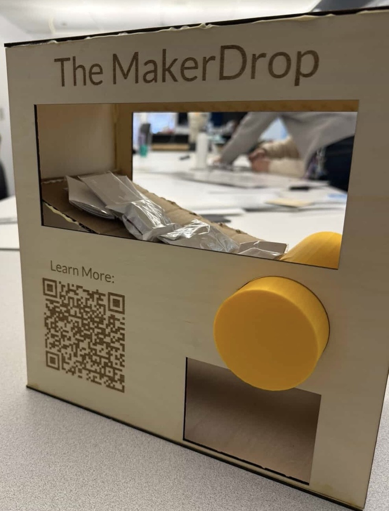
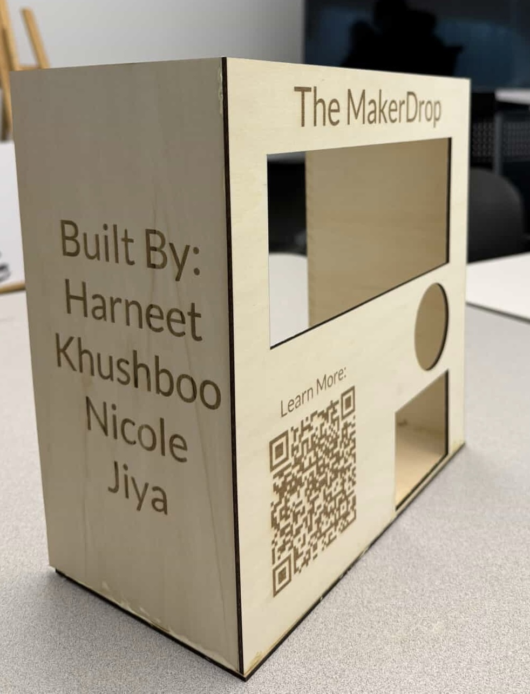
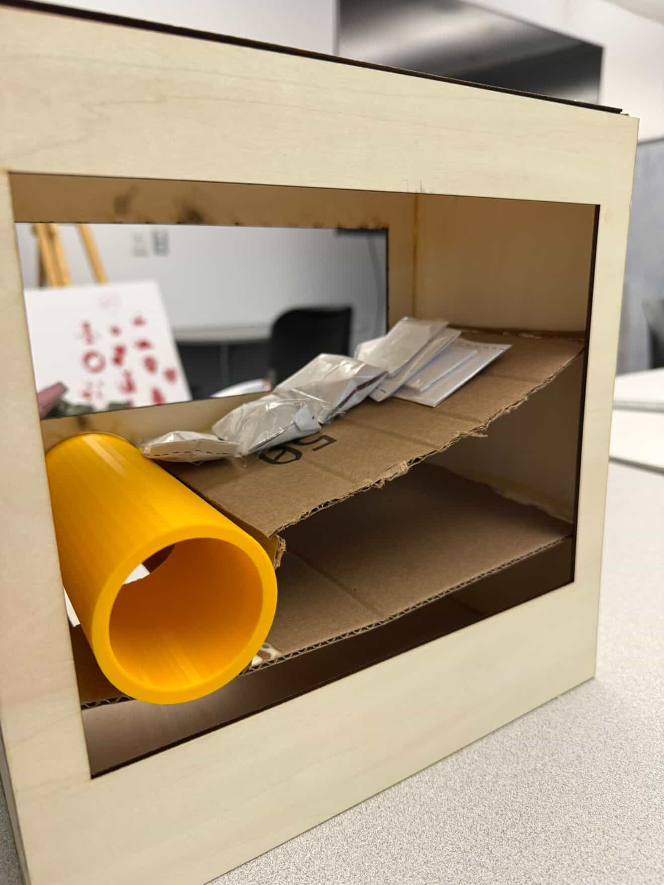
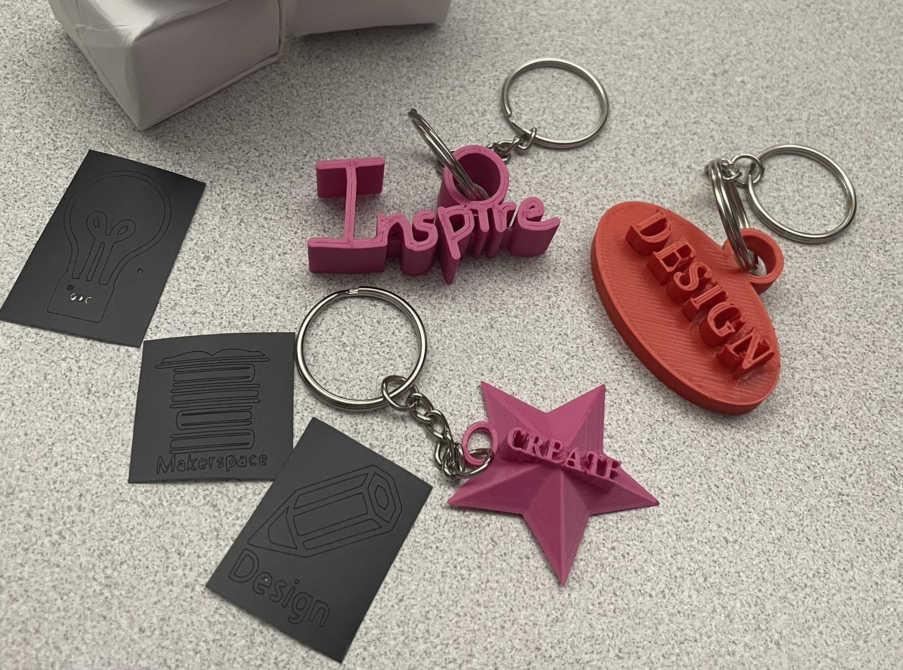
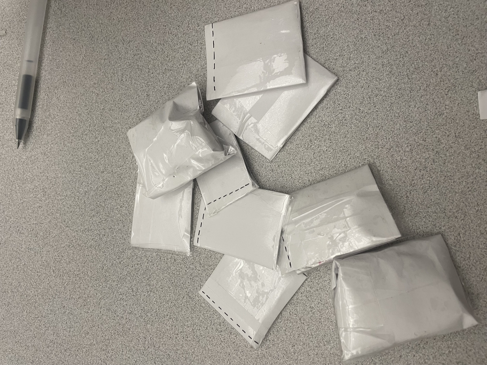
Fun fact: 3D printing the knob took 13 hours! We had to be extremely precise with the measurements to ensure the knob actually fit perfectly in the laser-cut slot in the wood panels, and thankfully it did without us having to redo the printing process!
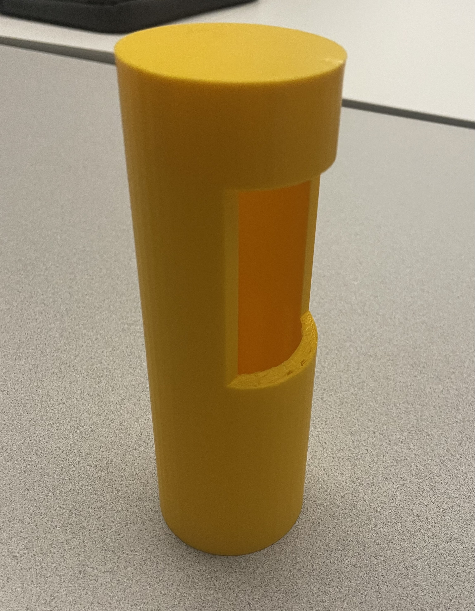
Reflection
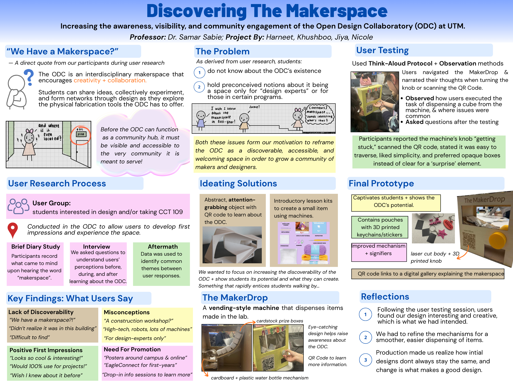
Overall, the MakerDrop was successful in increasing the discoverability of the UTM makerspace and lowering students’ barriers of intimation regarding the space.
As my first design thinking project, I genuinely learned a lot, and I’m so grateful that this course gave me a taste of the five-step design thinking process that I can apply to my future projects and real-world experiences. I enjoyed being able to have full creative direction to take this project in any direction our teams wanted. This project piqued my interest in product design and UX research. I’m someone who has always loved creating, just using my hands and being able to make things, whether that be physical or digital fabrication; this project gave me insights on how design and fabrication can be used to create meaningful change and make real impact to solve user problems, captivating my attention and curiosity and willingness to learn more! I honestly never thought my program would allow me to produce physical creations like the MakerDrop; it actually reminded me of my high-school physics classes where I would create physical projects all the time.
Through this project, I have learned that design is an iterative process through and through. It is never about starting off with an idea that is already perfect and following a linear process. Instead, it is repetitive, constantly using user-feedback to refine and perfect your ideas and converge on the best problem to solve. The only reason that our final prototype of the MakerDrop performs so well is due to the valuable user-testing feedback that helped refine the design and functionality. I am also a firm believer that there is always potential to improve, and I think even our final prototype can be made better and stronger in the future.